Section 2.8 — Probability models for random samples
Contents
Section 2.8 — Probability models for random samples#
This notebook contains the code examples from Section 2.8 Probability models for random samples of the No Bullshit Guide to Statistics.
Notebook setup#
# load Python modules
import numpy as np
import pandas as pd
import seaborn as sns
import matplotlib.pyplot as plt
from plot_helpers import gen_samples
from plot_helpers import plot_samples
from plot_helpers import plot_samples_panel
from plot_helpers import gen_sampling_dist
from plot_helpers import plot_sampling_dist
from plot_helpers import plot_sampling_dists_panel
# Figures setup
sns.set_theme(
context="paper",
style="whitegrid",
palette="colorblind",
rc={'figure.figsize': (7,4)},
)
%config InlineBackend.figure_format = 'retina'
# set random seed for repeatability
np.random.seed(42)
Definitions#
\(X\): a random variable with probability distribution \(f_X\)
\(\mathbf{X} = (X_1,X_2,X_3, \ldots, X_n)\): random sample of size \(n\). Each \(X_i\) is independent copy of the random variable \(X \sim f_X\).
\(\mathbf{x} = (x_1,x_2, \ldots, x_n)\): a particular sample, which consists of \(n\) observations from the distribution \(f_X\).
statistic: any function computed from a particular sample \(\mathbf{x}\).
sampling distribution of statistic: the variability of a statistic when computed on a random sample \(\mathbf{X}\)
Sample statistics#
A statistics is any function we compute from a sample \(\mathbf{x}\).
Examples of sample statistics:
sample mean \(\overline{\mathbf{x}} = \frac{1}{n}\sum_{i=1}^n x_i\)
sample variance \(s^2 = \frac{1}{n-1}\sum_{i=1}^n \left(x_i-\overline{\mathbf{x}}\right)^2\)
median \(F_{\mathbf{x}}^{-1}(\frac{1}{2})\), where \(F_{\mathbf{x}}^{-1}\) is the inverse of the empirical CDF.
90th percentile \(F_{\mathbf{x}}^{-1}(0.9)\)
Sample mean#
Let’s focus on the sample mean:
def mean(sample):
"""
Compute the mean of the values in `sample`.
"""
return sum(sample) / len(sample)
mean([1,3,11])
5.0
Example 1.1: Samples from a uniform distribution#
from scipy.stats import uniform
rvU = uniform(0,1)
mean(rvU.rvs(10))
0.5201367359526748
mean(rvU.rvs(100))
0.459360440874598
mean(rvU.rvs(1000))
0.49846377158147603
mean(rvU.rvs(1000000))
0.5003560391875443
Example 1.2: Samples from the normal#
from scipy.stats import norm
rvZ = norm(0,1)
np.random.seed(123)
mean(rvZ.rvs(10))
-0.26951611032632794
mean(rvZ.rvs(100))
0.04528630589790067
mean(rvZ.rvs(1000))
-0.03750017240797483
mean(rvZ.rvs(1000000))
0.0006794219838587821
Example 1.3: Samples from the exponential distribution#
from scipy.stats import expon
lam = 0.2
rvE = expon(0, 1/lam)
np.random.seed(123)
mean(rvE.rvs(10))
5.334172048766929
mean(rvE.rvs(100))
4.488399438411224
mean(rvE.rvs(1000))
4.964101264394126
mean(rvE.rvs(1000000))
4.996982168599892
Law of large numbers#
TODO: demo of some sort as sample size increases
maybe using all three examples…
Sampling distributions of statistics#
Consider any function \(g\) computed based on a sample of size \(n\).
We’ll talk about the sample mean (defined as the Python function mean above),
but the concept applies to any function \(g\).
Functions computed from samples are called statistics. you’re already familiar with several of these functions (mean, variance, standard deviation). For now we’ll keep calling them functions to make the connection with math concept of a function cleared, and also to facilitate the hands-on calculations using Python functions.
Given the random sample \(\mathbf{X}\), the quantity \(g(\mathbf{X})\) is a random variable. This should make sense intuitively, since the inputs to the function \(\mathbf{X}\) are random, the output of the function is also random.
The probability distribution of the random variable \(g(\mathbf{X})\) is called the sampling distribution of \(g\).
Example 1: sampling distribution of \(\mathbf{Mean}(\mathbf{U})\)#
In this example, we’ll study the sampling distribution of the \(\mathbf{Mean}\) statistic computed from samples of the form \(\mathbf{U} = (U_1, U_2, \ldots, U_n)\), where each \(U_i\) is an instance of the standard uniform random variable \(U \sim \mathcal{U}(0,1)\).
We can create a computer model rvU for the random variable \(U \sim \mathcal{U}(0,1)\)
by initializing an instance of the uniform family of distributions defined in scipy.stats.
from scipy.stats import uniform
rvU = uniform(0,1)
We can now generate observations of the random sample \(\mathbf{U} = (U_1, U_2, \ldots, U_n)\)
by calling the method rvU.rvs(n),
which generates a sequence of n observations of the random variable \(U\).
n = 30
usample = rvU.rvs(n)
usample
array([6.39043215e-01, 4.71178660e-03, 4.90155216e-01, 6.55264765e-01,
7.62192227e-01, 3.83370935e-02, 2.24949515e-01, 7.07156329e-01,
5.78334273e-01, 8.31641114e-01, 1.33322786e-01, 6.32126795e-01,
8.92039594e-01, 6.42959916e-01, 9.78706326e-01, 6.49778357e-01,
6.78845170e-01, 7.72245356e-01, 8.04319181e-01, 4.42603088e-01,
7.24942069e-01, 3.41343705e-01, 4.03621689e-01, 6.20305221e-01,
8.22887696e-01, 1.15535838e-01, 5.85864740e-01, 7.34576106e-04,
8.29279803e-01, 8.09188899e-01])
mean(usample)
0.5604145445141095
We now generate some 10 data samples of size \(n=30\), and plot the observations as a scatter plot.
usamples_df = gen_samples(rvU, n=30, N=10)
plot_samples(usamples_df)
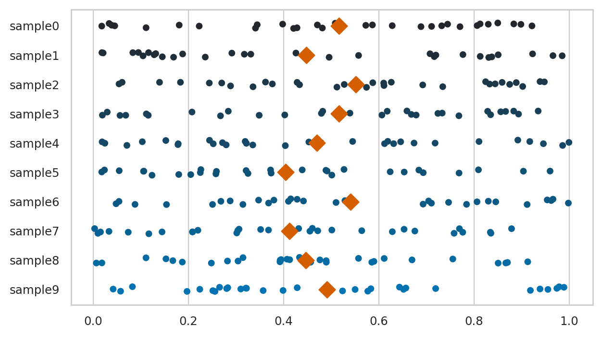
Visualizing the sampling distribution of the mean.
Let’s now generate \(N=1000\) samples \(\mathbf{u}_1, \mathbf{u}_2, \mathbf{u}_3, \ldots, \mathbf{u}_N\), compute the mean of each sample to form a list of observations ubars = \([\overline{\mathbf{u}_1}, \overline{\mathbf{u}_2}, \overline{\mathbf{u}_3}, \ldots, \overline{\mathbf{u}_N}]\).
N = 1000 # number of samples
n = 30 # sample size
ubars = []
for i in range(0, N):
usample = rvU.rvs(n)
ubar = mean(usample)
ubars.append(ubar)
We can now plot a histogram of the observations from the sampling distribution we have ubars
by calling sns.histplot(ubars).
We can also generate a strip plot using sns.stripplot(ubars, marker="D"),
specifying the D (diamond) marker to indicate we are plotting the means from each sample.
We’ll use the function sns.scatteplot(x=stats, y=-5, marker="D") to draw a scatter plot below the histogram,
so you can see individual observations.
sns.histplot(ubars, color="r")
sns.scatterplot(x=ubars, y=-5, color="r", marker="D", alpha=0.1)
<AxesSubplot: ylabel='Count'>
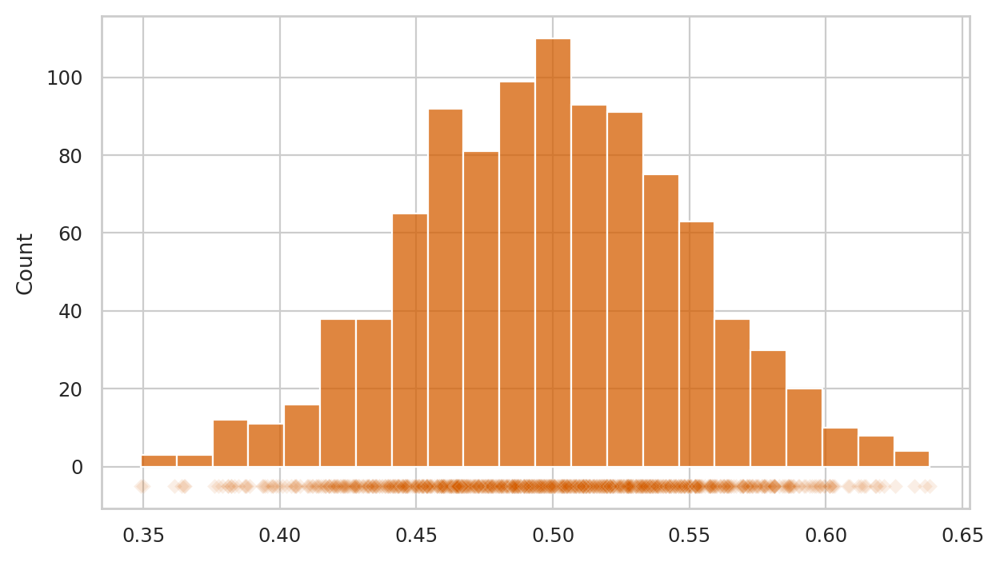
We can compute the mean and the variance of the sampling distribution:
np.mean(ubars), np.std(ubars)
(0.49853729652470496, 0.04990307467533145)
General-purpose generator of sampling distributions#
We can make generic function from the above example.
The function gen_sampling_dist generates N samples of size n from the random variable object rv
and calculates the values of statistic function statfunc from each of the samples.
The function returns a lists of the values of the statistic calculated from each sample.
def gen_sampling_dist(rv, statfunc, n, N=1000):
stats = []
for i in range(0, N):
sample = rv.rvs(n)
stat = statfunc(sample)
stats.append(stat)
return stats
ubars = gen_sampling_dist(rvU, statfunc=mean, n=30, N=1000)
np.mean(ubars), np.std(ubars)
(0.5034267823194173, 0.052802742758327505)
Example 2 (continued): sampling distribution of the mean#
Let’s define a random variable rvZ \(\sim \mathcal{N}(\mu=0, \sigma=1)\).
from scipy.stats import norm
rvZ = norm(0,1)
We now generate some 10 data samples of size \(n=30\), and plot the observations as a scatter plot.
nsamples_df = gen_samples(rvZ, n=30, N=10)
plot_samples(nsamples_df, xlims=[-3,3])
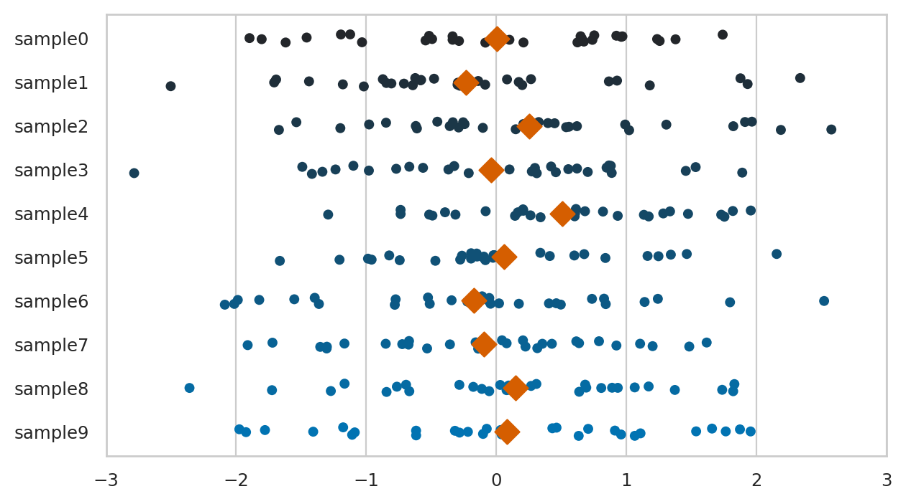
Visualizing the sampling distribution of the mean.
Let’s now generate \(N=1000\) samples \(\mathbf{z}_1, \mathbf{z}_2, \mathbf{z}_3, \ldots, \mathbf{z}_N\), compute the mean of each sample zbars = \([\overline{\mathbf{z}_1}, \overline{\mathbf{z}_2}, \overline{\mathbf{z}_3}, \ldots, \overline{\mathbf{z}_N}]\).
zbars = gen_sampling_dist(rvZ, statfunc=mean, n=30)
The plot helper function plot_sampling_dist(stats) generates a combined plot that
shows both a histogram and a scatter plot,
as shown in the figures below.
plot_sampling_dist(zbars, xlims=[-1,1])
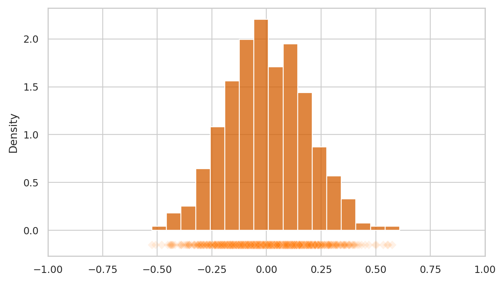
We can compute the mean and the variance of the sampling distribution:
np.mean(zbars), np.std(zbars)
(0.0018854699344738157, 0.18208248720829098)
Example 3 (continued): sampling distribution of the mean#
Let’s define a random variable rvE \(\sim \textrm{Expon}(\lambda=0.2)\).
from scipy.stats import expon
lam = 0.2 # lambda
scale = 1/lam
rvE = expon(0, scale)
We now generate some 10 data samples of size \(n=30\), and plot the observations as a scatter plot.
esamples_df = gen_samples(rvE, n=30, N=10)
plot_samples(esamples_df, xlims=[-0.1,30])
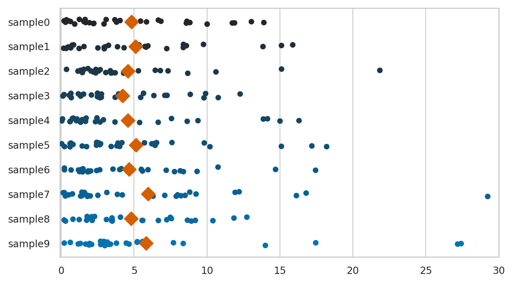
Visualizing the sampling distribution of the mean.
We will now generate \(N=1000\) samples \(\mathbf{e}_1, \mathbf{e}_2, \mathbf{e}_3, \ldots, \mathbf{e}_N\), compute the mean of each sample \(\overline{\mathbf{e}_1}, \overline{\mathbf{e}_2}, \overline{\mathbf{e}_3}, \ldots, \overline{\mathbf{e}_N}\).
ebars = gen_sampling_dist(rvE, statfunc=mean, n=30)
plot_sampling_dist(ebars, xlims=[0,10])
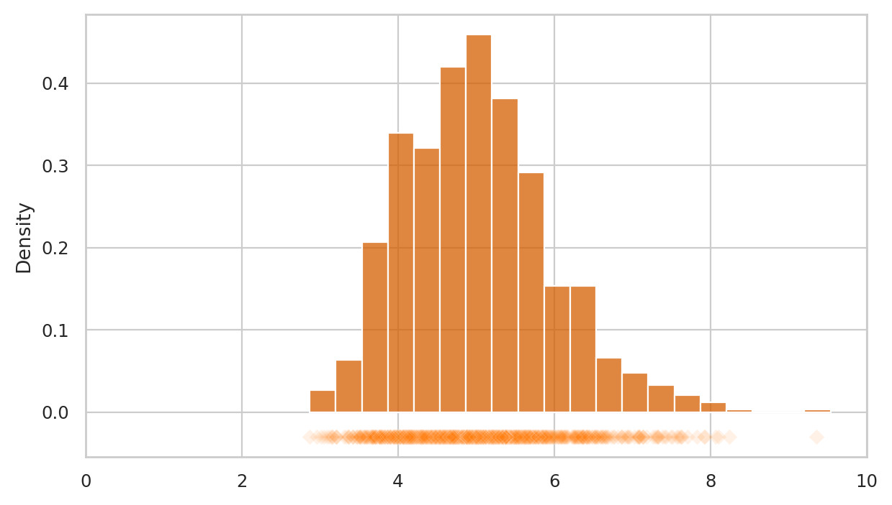
We can compute the mean and the variance of the sampling distribution:
np.mean(ebars), np.std(ebars)
(5.01435910441934, 0.9368054500150659)
Central limit theorem#
The Central Limit Theorem (CLT) is a mathy result tells us two very important practical facts:
The sampling distribution of the sample mean \(\overline{X}\) is normally distributed for samples taken for ANY random variable, as the sample size \(n\) increases.
The standard deviation of sampling distribution of the sample mean \(\overline{X}\) decrease \(\sigma_{\overline{X}} = \frac{\sigma}{\sqrt{n}}\), where \(\sigma\) is the standard deviation of the random variable \(X\).
Let’s verify both claims of the CLT by revisiting the sampling distributions we obtained above.
Example 1 (cont.): sampling distribution as a function of \(n\)#
from scipy.stats import uniform
rvU = uniform(0,1)
plot_samples_panel(rvZ, xlims=None)
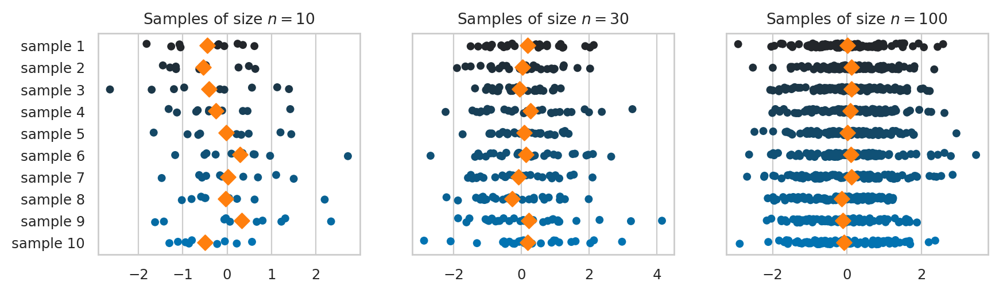
ubarss = plot_sampling_dists_panel(rvU, xlims=[0.25,0.75], binwidth=0.01)
ubars10, ubars30, ubars100 = ubarss
---------------------------------------------------------------------------
TypeError Traceback (most recent call last)
Cell In[45], line 1
----> 1 ubarss = plot_sampling_dists_panel(rvU, xlims=[0.25,0.75], binwidth=0.01)
2 ubars10, ubars30, ubars100 = ubarss
File ~/work/noBSstatsnotebooks/noBSstatsnotebooks/notebooks/plot_helpers.py:712, in plot_sampling_dists_panel(rv, xlims, N, ns, binwidth, filename)
710 # B. plot the distribution predicted by the CLT
711 rvXbar = norm(rv.mean(), rv.std()/np.sqrt(n))
--> 712 sns.lineplot(x=xs, y=rvXbar.pdf(xs), ax=ax, color="m")
713 xbarss.append(xbars)
715 if filename:
File /opt/hostedtoolcache/Python/3.8.15/x64/lib/python3.8/site-packages/seaborn/relational.py:645, in lineplot(data, x, y, hue, size, style, units, palette, hue_order, hue_norm, sizes, size_order, size_norm, dashes, markers, style_order, estimator, errorbar, n_boot, seed, orient, sort, err_style, err_kws, legend, ci, ax, **kwargs)
642 color = kwargs.pop("color", kwargs.pop("c", None))
643 kwargs["color"] = _default_color(ax.plot, hue, color, kwargs)
--> 645 p.plot(ax, kwargs)
646 return ax
File /opt/hostedtoolcache/Python/3.8.15/x64/lib/python3.8/site-packages/seaborn/relational.py:489, in _LinePlotter.plot(self, ax, kws)
486 if self.err_style == "band":
488 func = {"x": ax.fill_between, "y": ax.fill_betweenx}[orient]
--> 489 func(
490 sub_data[orient],
491 sub_data[f"{other}min"], sub_data[f"{other}max"],
492 color=line_color, **err_kws
493 )
495 elif self.err_style == "bars":
497 error_param = {
498 f"{other}err": (
499 sub_data[other] - sub_data[f"{other}min"],
500 sub_data[f"{other}max"] - sub_data[other],
501 )
502 }
File /opt/hostedtoolcache/Python/3.8.15/x64/lib/python3.8/site-packages/matplotlib/__init__.py:1423, in _preprocess_data.<locals>.inner(ax, data, *args, **kwargs)
1420 @functools.wraps(func)
1421 def inner(ax, *args, data=None, **kwargs):
1422 if data is None:
-> 1423 return func(ax, *map(sanitize_sequence, args), **kwargs)
1425 bound = new_sig.bind(ax, *args, **kwargs)
1426 auto_label = (bound.arguments.get(label_namer)
1427 or bound.kwargs.get(label_namer))
File /opt/hostedtoolcache/Python/3.8.15/x64/lib/python3.8/site-packages/matplotlib/axes/_axes.py:5367, in Axes.fill_between(self, x, y1, y2, where, interpolate, step, **kwargs)
5365 def fill_between(self, x, y1, y2=0, where=None, interpolate=False,
5366 step=None, **kwargs):
-> 5367 return self._fill_between_x_or_y(
5368 "x", x, y1, y2,
5369 where=where, interpolate=interpolate, step=step, **kwargs)
File /opt/hostedtoolcache/Python/3.8.15/x64/lib/python3.8/site-packages/matplotlib/axes/_axes.py:5272, in Axes._fill_between_x_or_y(self, ind_dir, ind, dep1, dep2, where, interpolate, step, **kwargs)
5268 kwargs["facecolor"] = \
5269 self._get_patches_for_fill.get_next_color()
5271 # Handle united data, such as dates
-> 5272 ind, dep1, dep2 = map(
5273 ma.masked_invalid, self._process_unit_info(
5274 [(ind_dir, ind), (dep_dir, dep1), (dep_dir, dep2)], kwargs))
5276 for name, array in [
5277 (ind_dir, ind), (f"{dep_dir}1", dep1), (f"{dep_dir}2", dep2)]:
5278 if array.ndim > 1:
File /opt/hostedtoolcache/Python/3.8.15/x64/lib/python3.8/site-packages/numpy/ma/core.py:2360, in masked_invalid(a, copy)
2332 def masked_invalid(a, copy=True):
2333 """
2334 Mask an array where invalid values occur (NaNs or infs).
2335
(...)
2357
2358 """
-> 2360 return masked_where(~(np.isfinite(getdata(a))), a, copy=copy)
TypeError: ufunc 'isfinite' not supported for the input types, and the inputs could not be safely coerced to any supported types according to the casting rule ''safe''
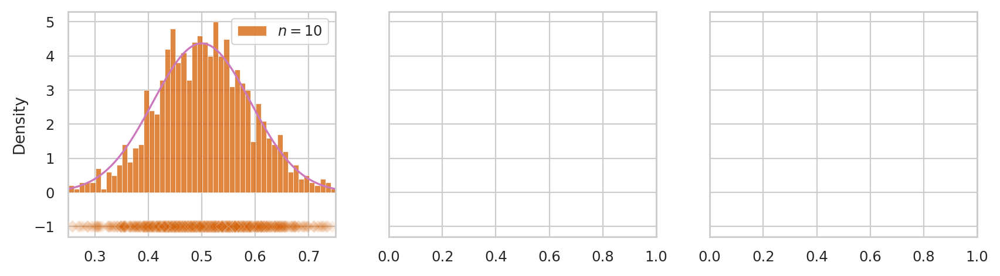
np.std(ubars10), np.std(ubars30), np.std(ubars100)
(0.08597715741110862, 0.05307001005012156, 0.02863960146457155)
Let’s compare these observations from the simulation, to the theoretical standard deviations predicted by the CLT.
from math import sqrt
rvU.std()/sqrt(10), rvU.std()/sqrt(30), rvU.std()/sqrt(100)
(0.09128709291752768, 0.05270462766947299, 0.028867513459481287)
Example 2 (cont.): sampling distribution as a function of \(n\)#
from scipy.stats import norm
mu = 0
sigma = 1
rvZ = norm(mu, sigma)
plot_samples_panel(rvZ, xlims=[-3, 3])
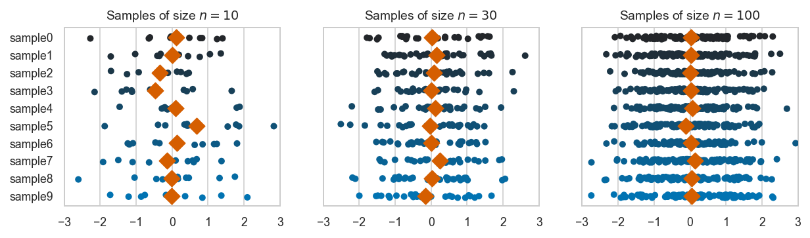
zbarss = plot_sampling_dists_panel(rvZ, xlims=[-1, 1], binwidth=0.02)
zbars10, zbars30, zbars100 = zbarss
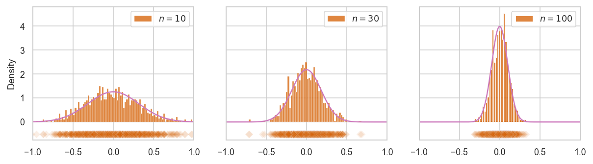
np.std(zbars10), np.std(zbars30), np.std(zbars100)
(0.3236182149202699, 0.18708485140622844, 0.10157298361492494)
Let’s compare these observations from the
from math import sqrt
rvZ.std()/sqrt(10), rvZ.std()/sqrt(30), rvZ.std()/sqrt(100)
(0.31622776601683794, 0.18257418583505536, 0.1)
Example 3 (cont.): sampling distribution as a function of \(n\)#
from scipy.stats import expon
lam = 0.2 # lambda
scale = 1/lam
rvE = expon(0, scale)
plot_samples_panel(rvE, xlims=[-0.1,30])
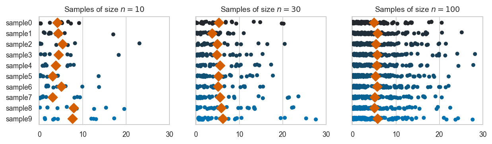
ebarss = plot_sampling_dists_panel(rvE, xlims=[-0.1, 10], binwidth=0.2)
ebars10, ebars30, ebars100 = ebarss
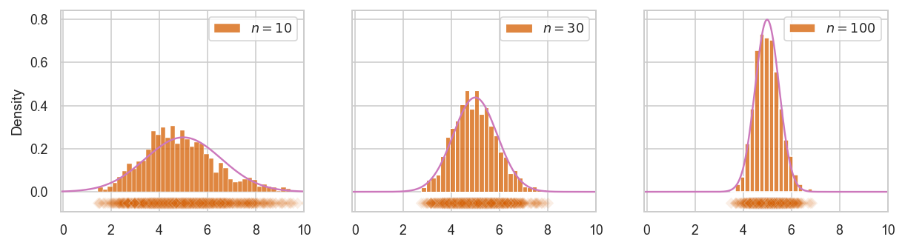
np.std(ebars10), np.std(ebars30), np.std(ebars100)
(1.6424071184557227, 0.8988315431033435, 0.51653333470598)
Let’s compare these observations from the
from math import sqrt
rvE.std()/sqrt(10), rvE.std()/sqrt(30), rvE.std()/sqrt(100)
(1.5811388300841895, 0.9128709291752769, 0.5)
Discussion#
CLT is the reason why statistics works. We can use properties of sample to estimate the parameters of the population, and our estimates get more and more accurate as the samples get larger.
Exercises#
See main text.